Apoyo temporal
Permite descargar parte del peso corporal durante momentos de menor demanda.
COPACKING · DISEÑO INDUSTRIAL · 2040
LOOP 01 es un asiento activo concebido para estaciones de trabajo de copacking. Su geometría tubular propone un apoyo temporal, ligero y móvil que permite alternar entre bipedestación y sedestación durante tareas repetitivas.
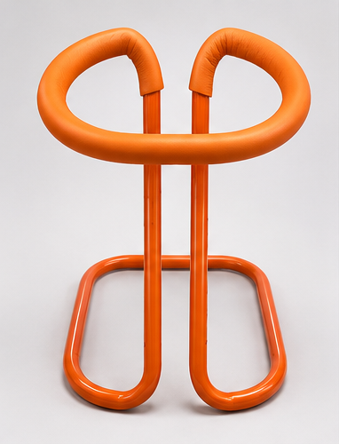
El cuerpo no tiene que permanecer estático.
Las operaciones de armado, llenado, etiquetado, inspección y rework combinan permanencia de pie, movimientos repetitivos y periodos de espera. LOOP 01 propone un punto intermedio: un apoyo que acompaña al trabajador sin convertir la estación en un asiento convencional.
La versión fabricada integra una estructura tubular naranja, un apoyo superior acolchado y una base de soporte que estabiliza el conjunto. El sistema de regulación incorpora perforaciones en el tubo para modificar la altura del apoyo y adaptarlo a distintas posiciones de trabajo.
Permite descargar parte del peso corporal durante momentos de menor demanda.
Favorece la alternancia entre estar de pie, semiapoyado y sentado.
Una huella compacta facilita recolocar el producto dentro del puesto.
El tubo continuo comunica ligereza, resistencia y facilidad de fabricación.
INTERACTIVO
Gira, acerca y examina la geometría del asiento. El modelo corresponde a la versión final fabricada, con apoyo superior acolchado, estructura tubular y ajuste de altura.
No sustituye la estación. La complementa.
El concepto parte de una necesidad observada en actividades de producción: mantener al trabajador cerca de la superficie de trabajo mientras se ofrece una posibilidad de recuperación postural.
Apoyo durante ciclos repetitivos de preparación y ensamblaje.
Alternancia postural en operaciones de precisión manual.
Apoyo durante periodos de observación y control de calidad.
Configuración flexible para tareas variables y estaciones compartidas.
VERSIÓN FINAL FABRICADA
La galería reúne las vistas principales del asiento definitivo y su incorporación a las actividades de copacking. Se muestran tanto imágenes de presentación del producto como registros de uso en planta.
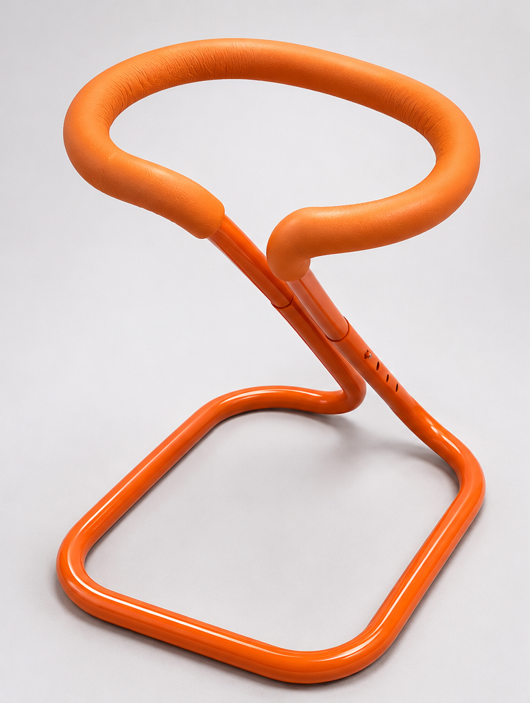
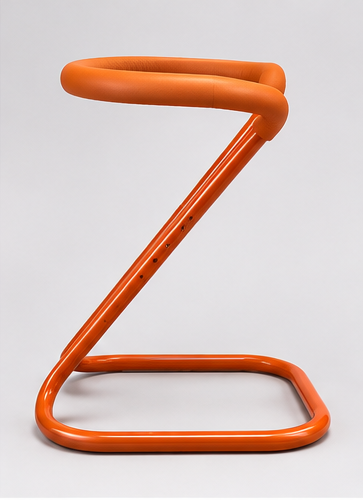
COMPONENTES Y SOLUCIONES
La documentación fotográfica presenta la versión final de LOOP 01 durante su revisión y evaluación en el entorno de copacking. Las imágenes muestran la interacción de los trabajadores con el prototipo y la relación entre el apoyo acolchado, la estructura tubular y la base durante el uso.
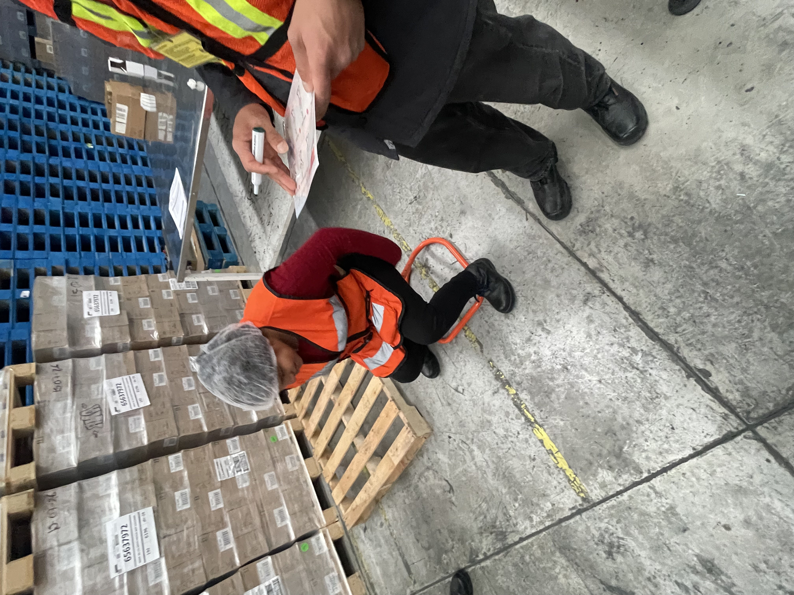
Trabajadores y personal de planta revisan el asiento y reconocen su configuración general antes de utilizarlo.
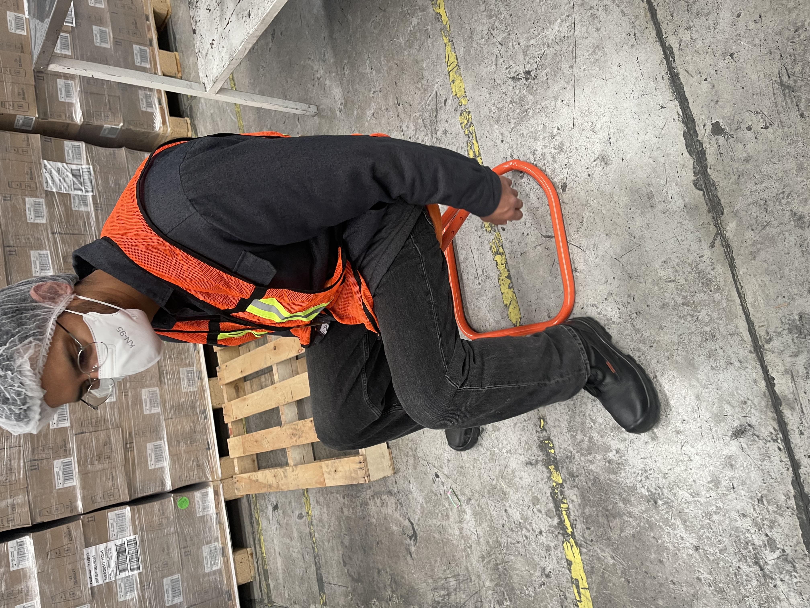
Se documenta la experiencia de uso mientras se observa la postura y se registran comentarios durante la evaluación.
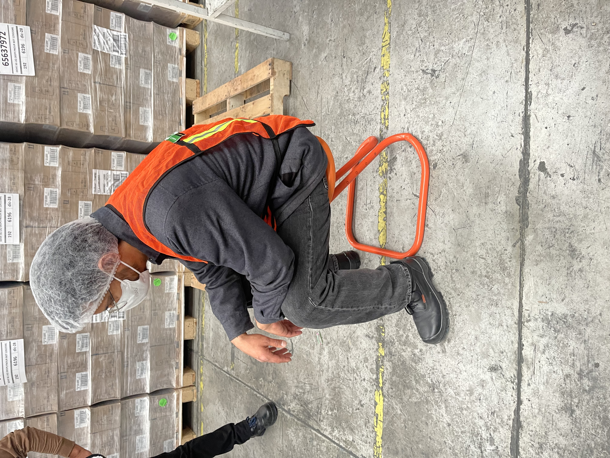
El registro permite observar la relación del usuario con el apoyo superior y la estructura que transmite las cargas hacia la base.
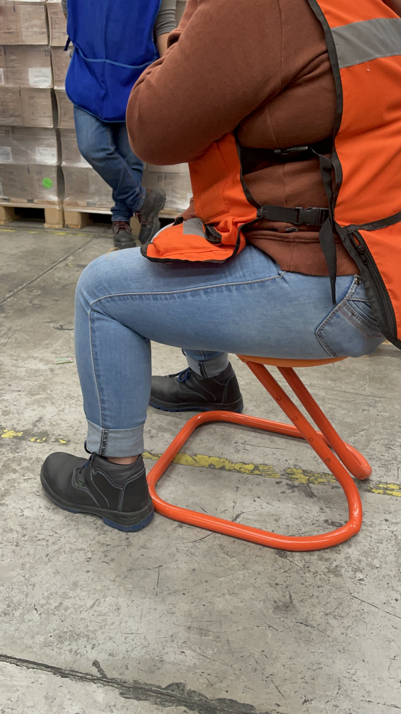
La imagen muestra el asiento en uso y la relación entre la postura adoptada, el soporte tubular y la superficie de contacto con el piso.
REGULACIÓN DEL APOYO
La secuencia visual documenta el ajuste del asiento y distintas posiciones de apoyo. Las perforaciones del tubo permiten modificar la altura del punto de contacto; el pasador de fijación asegura la posición seleccionada antes de utilizarlo.
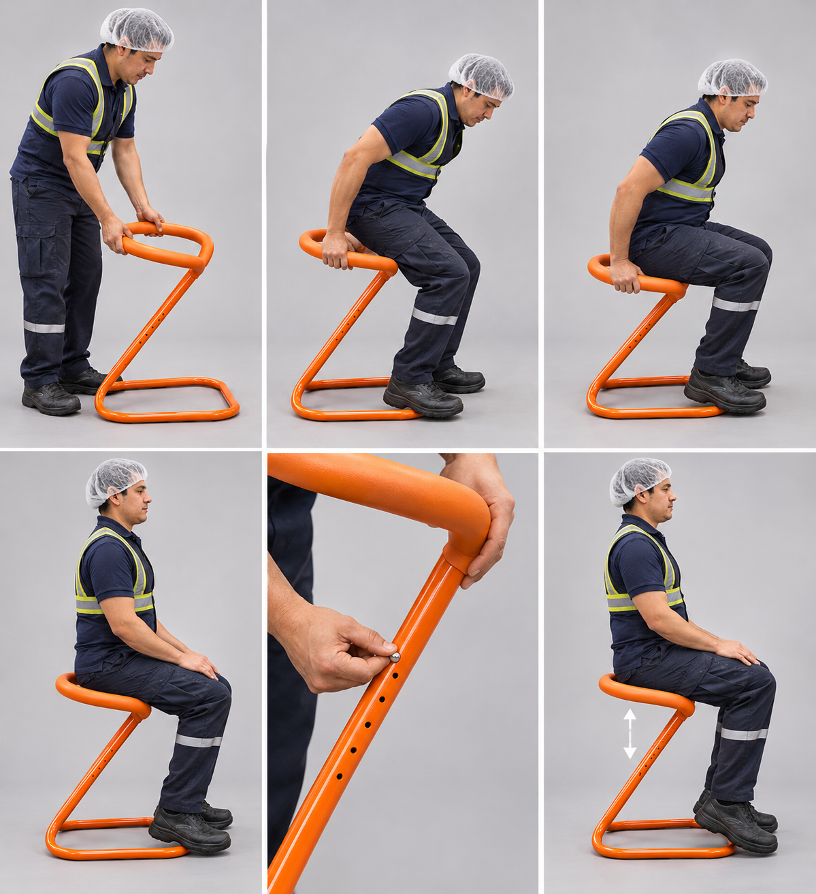
Se muestra la manipulación del asiento y el ajuste del apoyo superior mediante las posiciones disponibles en el tubo.
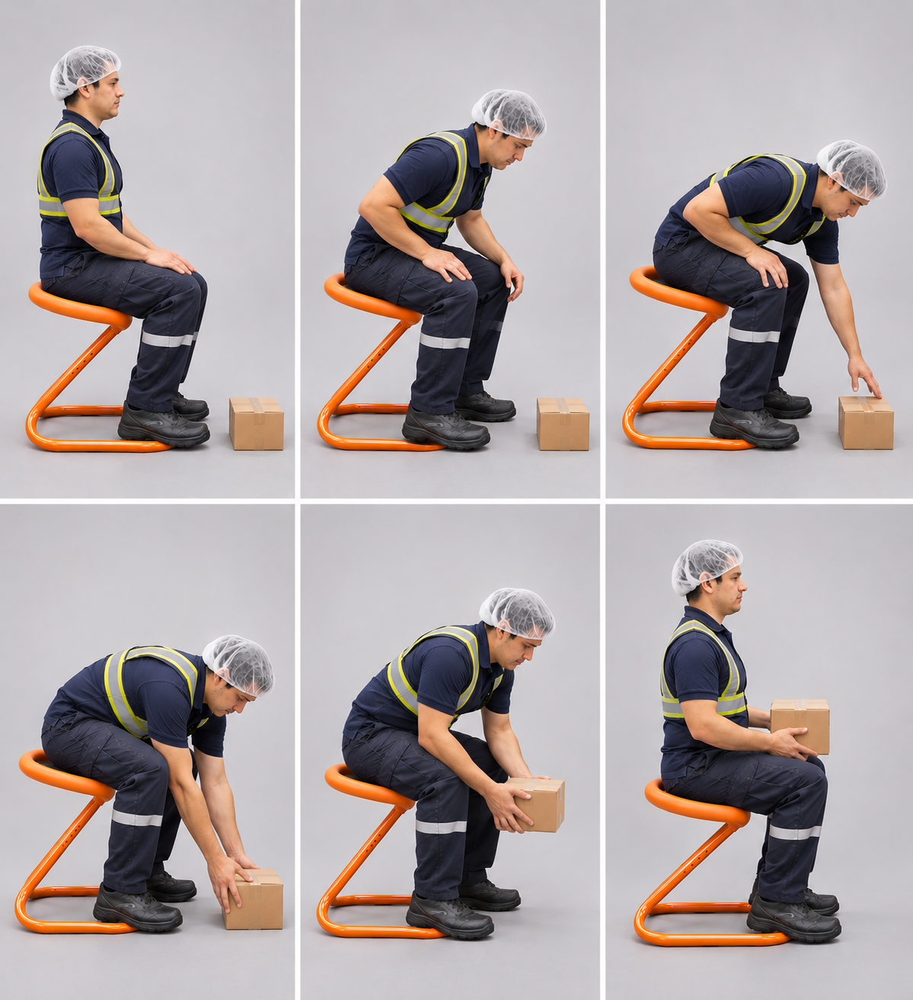
La secuencia registra al trabajador sentado mientras se aproxima, alcanza y manipula una caja desde el nivel inferior.
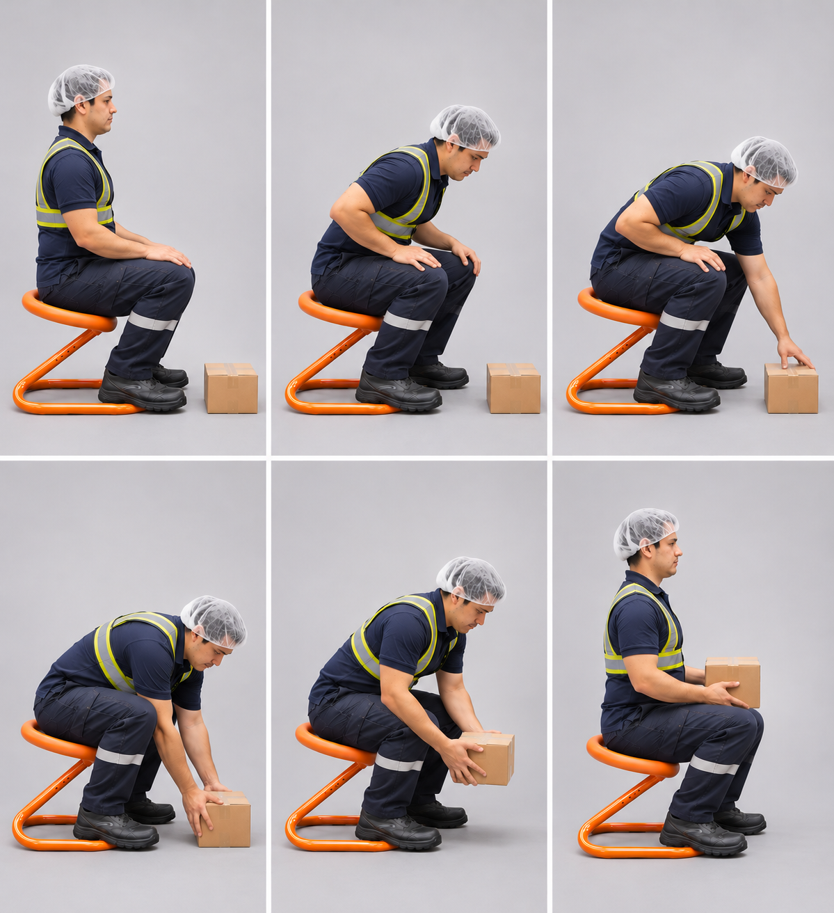
Se documenta la continuidad de la tarea desde la posición de apoyo, incluyendo el alcance hacia el producto y su manipulación.
La selección de altura debe realizarse antes de iniciar la actividad y comprobar que el elemento de fijación quede correctamente colocado en la perforación elegida.
PLANO PL-05
El plano reúne la localización de las uniones del prototipo, sus detalles constructivos y las indicaciones de preparación y acabado. Se presenta como documento técnico de consulta para fabricación y revisión de las conexiones estructurales.
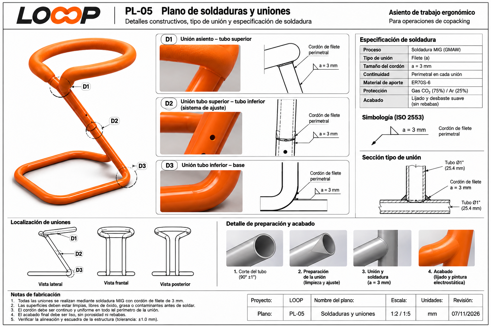
El documento identifica las uniones D1, D2 y D3, la simbología de soldadura, la sección tipo y las notas de fabricación y acabado. Selecciona el plano para abrirlo a mayor tamaño.
OBSERVACIÓN DEL PROTOTIPO
Los registros muestran el uso del prototipo en una estación de copacking. La observación permite documentar la relación entre el trabajador, la postura de apoyo y el espacio inmediato de operación.
Registro del trabajador utilizando el asiento dentro del área productiva, con materiales y tarimas en el entorno inmediato.
Vista complementaria de la interacción entre el apoyo acolchado, la postura del usuario y la base del asiento.
LOOP 01 · COPACKING ACTIVE SEAT